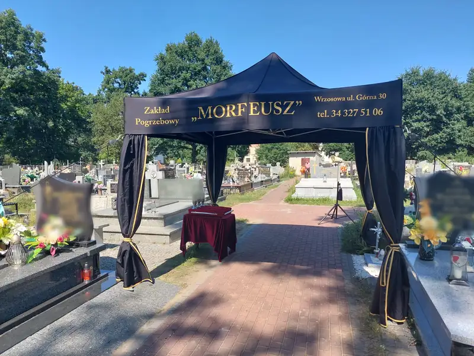
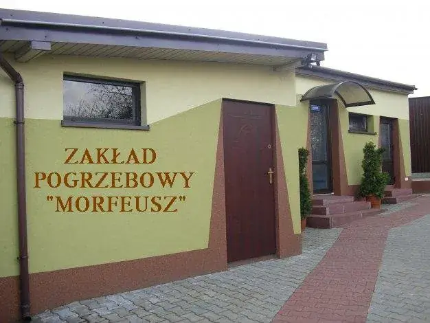

Wrzosowa, ul. Górna 30 - okolice Częstochowy
Zakład Pogrzebowy „Morfeusz”
Czynne całą dobę, także w święta
Od 1997 roku kompleksowe usługi pogrzebowe. Pomożemy we wszystkich formalnościach, pogrzeb zorganizujemy także bezgotówkowo.
Telefon całodobowy 601 460 964Zakres usług
Świadczymy kompleksowe usługi pogrzebowe - od pierwszego telefonu, przez formalności i transport, po oprawę ceremonii i pomnik.


Co zrobić, gdy umrze bliska osoba
Nie musisz wiedzieć wszystkiego od razu. Wystarczy jeden telefon - resztę przejdziemy razem, krok po kroku.
- Zadzwoń do nas. Odbieramy o każdej porze, także w nocy, w niedziele i w święta. Jeśli śmierć nastąpiła w domu, potrzebny jest też lekarz, który stwierdzi zgon.
- Przygotuj dokumenty zmarłego, które masz pod ręką, np. dowód osobisty. Przez telefon podpowiemy, co jeszcze będzie potrzebne.
- Spokojnie ustalimy przebieg pogrzebu - termin, miejsce, oprawę. Pomożemy w formalnościach, pogrzeb możemy zorganizować bezgotówkowo.
- Resztą zajmiemy się my: transport, przygotowanie zmarłego, oprawa ceremonii i cmentarz.
Zakład we Wrzosowej
Działamy od 1997 roku. Zakład mieści się przy ul. Górnej 30 we Wrzosowej, w gminie Poczesna pod Częstochową. Mamy własną kaplicę, własną chłodnię oraz karawany, którymi przewozimy zmarłych w kraju i za granicę.
Ceremonie obsługują stosownie ubrani, przeszkoleni pracownicy. Na cmentarzu rozstawiamy namiot z zasłonami, a na życzenie zapewniamy oprawę muzyczną, wieńce i wiązanki.
Organizujemy pogrzeby dla rodzin z Wrzosowej, Poczesnej, Częstochowy, Kamienicy Polskiej, Konopisk, Starczy, Olsztyna, Mykanowa i okolicznych miejscowości. Transport zmarłych wykonujemy w całym kraju i za granicę.
Zakład i zdjęcia

Kontakt
Zakład Pogrzebowy „Morfeusz”
ul. Górna 30
42-263 Wrzosowa
- Telefon całodobowy
- 601 460 964
- Telefon stacjonarny
- 34 327 51 06
- Telefon komórkowy
- 603 847 926
- zpmorfeusz@onet.eu
Zakład czynny całą dobę w dni powszednie i święta.
Formularz kontaktowy